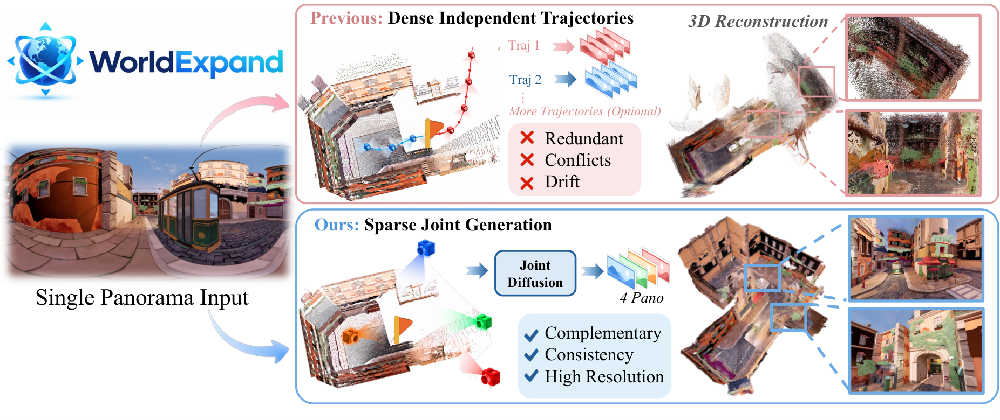
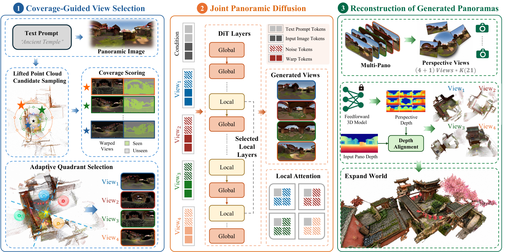

Plan in code
Use an agent to turn a scene concept into a code-based 3D plan.
ONE PANORAMA → ONE EXPANDED WORLD
Four selected 2K panoramas. Jointly generated. Ready for 3D reconstruction.
OUR NEXT PROJECT
Use an agent to turn a scene concept into a code-based 3D plan.
Turn rough 3D blockouts into detailed scenes.
Combine generated scenes into a composable 3D world.
MOTIVATION

Adjacent frames repeat the same geometry.
One rollout explores one direction.
Independent runs conflict and drift.
THE METHOD
Generate a sparse set of panoramas jointly.
Select viewpoints that maximize unseen coverage in each quadrant.
Warp the source geometry and jointly denoise the selected views.

GLOBAL–LOCAL ATTENTION
Localize the 30 least-sensitive of 60 DiT layers. Keep the rest global.
299 s → 169 s / step
66.76 s → 37.34 s / profile
90.5 GB → 82.7 GB
20.49 → 20.16 PSNR
QUALITATIVE
BEFORE / AFTER
MORE RESULTS